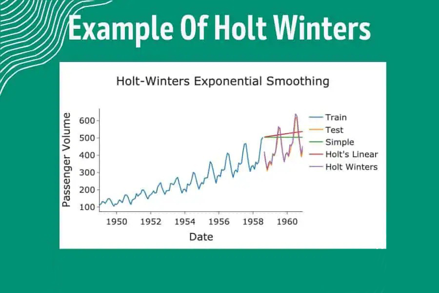
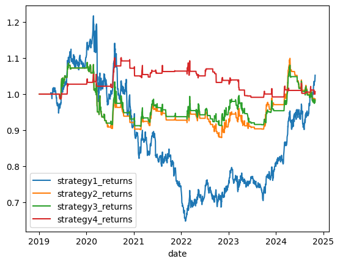
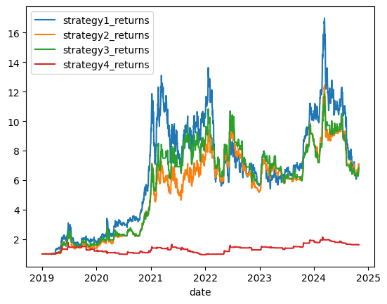

Table of Contents
Strategy Details
Non-seasonal Holt-Winters' Model is a classic model for predicting time series data with no seasonal factors. This strategy applies the Holt-Winters model, combined with financial indicators, to develop trading strategies for BTC and Gold markets. To simplify simulation and replication, the transactions focus on available ETFs in the market.
Key Components
- Holt-Winters Model:
- Non-seasonal time series prediction
- Applied to stock returns
- Combined with financial indicators
- Strategy Implementation:
- Multiple strategy combinations
- Performance comparison with transaction costs
- Focus on BTC and Gold ETFs
import os
import requests
import pandas as pd
import numpy as np
import matplotlib.pyplot as plt
import yfinance as yf
import statsmodels.api as sm
import pandas_ta as ta
start_date = '2019-01-01'
end_date = '2024-10-31'
Data Extraction
We extract historical price data for Gold and Bitcoin from Yahoo Finance, implementing efficient data management with local caching:
Code Explanation
This code section implements the data extraction functionality:
- Data Management:
- Creates a data directory for local storage
- Implements caching to avoid re-downloading existing data
- Downloads historical data from Yahoo Finance
def load_data(symbol):
direc = 'data/'
os.makedirs(direc, exist_ok=True)
file_name = os.path.join(direc, symbol + '.csv')
if not os.path.exists(file_name):
ticker = yf.Ticker(symbol)
df = ticker.history(start= start_date, end= end_date)
df.to_csv(file_name)
df = pd.read_csv(file_name, index_col=0)
df.index = pd.to_datetime(df.index, utc=True).tz_convert('US/Eastern')
df['date'] = df.index
if len(df) == 0:
os.remove(file_name)
return None
return df
#Downloading the data from Yahoo Finance
gold = load_data('GC=F')[['Open' , 'Close']]
btc = load_data('BTC-USD')[['Open' , 'Close']]
lookback = 60
#changing the dates format
gold['date'] = gold.index
btc['date'] = btc.index
gold['date'] = pd.to_datetime(gold['date'], format='%Y-%m-%d').dt.date
btc['date'] = pd.to_datetime(btc['date'], format='%Y-%m-%d').dt.date
gold.set_index('date', inplace=True)
btc.set_index('date', inplace=True)
#daily returns
gold['daily_return'] = gold['Close'].pct_change()
btc['daily_return'] = btc['Close'].pct_change()
Seasonal Analysis of Returns
We analyze the daily returns of both Gold and Bitcoin to check for any seasonal patterns:
#plot the returns to see the data trend
plt.plot(gold['daily_return'], label='Gold', color='blue')
plt.legend()
plt.show()
plt.plot(btc['daily_return'], label='Bitcoin', color='orange')
plt.legend()
plt.show()
Code Explanation
This code section implements the return analysis:
- Data Visualization:
- Creates separate plots for Gold and Bitcoin returns
- Uses distinct colors for easy differentiation
- Includes legends for clear identification
The returns appear to be stationary for most of the time period, suggesting that traditional time series models like Holt-Winters may be appropriate for forecasting.
Building Holt-Winters Non-Seasonal Model
The Holt-Winters non-seasonal model is implemented to forecast price movements for both Gold and Bitcoin. This model uses exponential smoothing to capture trends in the data while accounting for the non-seasonal nature of these assets.
#define function for forecasting the price
def forecast_price(price, lookback=60):
price['forecast'] = np.nan
for i in range(len(price)):
if i < lookback:
continue
#for the day i, we calculate the forecast value for the next day with pass 60 days data
past_price = price['daily_return'].iloc[i-lookback:i]
model = sm.tsa.ExponentialSmoothing(past_price, trend= "add", damped_trend=False).fit()
#forecast the next day return
price['forecast'].iloc[i] = model.forecast(steps=1)
return price
import warnings
warnings.filterwarnings("ignore")
#forecast the price for gold and bitcoin
gold = forecast_price(gold)
btc = forecast_price(btc)
#After forecasting the price, we should also check the accuracy of the forecast
#It is hard to predict the exact price, but we can at least check if the forecast returns align with the actual returns movement
#checking the accruacy of the forecast at least on the direction of the price
def get_accuracy(data, name):
data['forecast_direction'] = np.sign(data['forecast'])
data['actual_direction'] = np.sign(data['daily_return'])
data['correct'] = (data['forecast_direction'] == data['actual_direction']).astype(int)
print(name, "accuracy: ", data['correct'].sum() / len(data))
print(name, "correct: ", data['correct'].value_counts())
get_accuracy(gold, "Gold")
get_accuracy(btc, "BTC")
Code Explanation
This code section implements the core forecasting components:
- Forecast Function:
- Creates a rolling window approach with 60-day lookback
- Uses ExponentialSmoothing with additive trend
- Generates one-step-ahead forecasts for each day
Trading Strategy Implementation
We implement a simple trading strategy based on the Holt-Winter forecast signals. The strategy takes long positions when the predicted return is positive and short positions when negative, with no holding period:
def get_portfolio_results(returns_holder):
mean_return = np.mean(returns_holder)
std_return = np.std(returns_holder)
sharpe = mean_return / std_return * np.sqrt(252)
print("Annualized return: ", round(mean_return * 252, 4))
print("Volatility: ", round(std_return * np.sqrt(252), 4))
print("Sharpe: ", round(sharpe, 4))
return mean_return, std_return, sharpe
def strategy_1(data, name, transaction_cost = 0.0025):
data['signal'] = np.sign(data['forecast'])
data['transaction_cost'] = 0
# If there's a change in signal, we add the transaction cost
data['transaction_cost'] = np.where(data['signal'] != data['signal'].shift(1), 2*transaction_cost, 0)
data['strategy1_returns'] = data['daily_return'] * data['signal'] - data['transaction_cost']
print (name)
get_portfolio_results(data['strategy1_returns'])
strategy_1(gold, "Gold", 0.0001)
strategy_1(btc, "BTC", 0.0005)
Code Explanation
This code section implements the core trading strategy:
- Portfolio Analysis:
- Calculates mean and standard deviation of returns
- Computes annualized Sharpe ratio
- Prints key performance metrics
- Strategy Implementation:
- Generates trading signals based on forecast direction
- Applies transaction costs on position changes
- Calculates strategy returns net of costs
Strategy 2: Threshold-Based Trading
Building upon the insights from Strategy 1, we implement a threshold-based approach to address the challenges of transaction costs and model errors. This strategy introduces a minimum threshold for trading signals to reduce excessive trading and improve profitability.
#Not to trade if the price difference is smaller than the transaction cost
#Gold Strategy 1.5
def strategy_2(df, name, transaction_cost):
threshold = 0.0025
df['signal'] = 0
df.loc[df['forecast'] > threshold, 'signal'] = 1
df.loc[df['forecast'] < -threshold, 'signal'] = -1
df['transaction_cost'] = 0
# If there's a change in signal, we add the transaction cost
df['transaction_cost'] = np.where(df['signal'] != df['signal'].shift(1), 2*transaction_cost, 0)
df['strategy2_returns'] = df['daily_return'] * df['signal'] - df['transaction_cost']
print (name)
get_portfolio_results(df['strategy2_returns'])
strategy_2(gold, "Gold", 0.0001)
strategy_2(btc, "BTC", 0.0005)
Strategy Analysis
The threshold-based approach reveals several key insights:
- Performance Impact:
- Threshold implementation did not significantly improve strategy performance
- Model errors continue to trigger frequent trading signals
- Transaction costs remain a significant factor in overall returns
Trading Strategy 3: SMA-Based Trading
This strategy implements a Simple Moving Average (SMA) based trading approach for both gold and Bitcoin markets. The strategy generates signals based on the crossover between price and SMA, combined with forecast thresholds.
#SMA
gold['SMA'] = gold['Close'].rolling(window=65).mean()
btc['SMA'] = btc['Close'].rolling(window=30).mean()
def strategy_3(df, name, transaction_cost):
threshold = 0.0025
df['SMA'] = df['Close'].rolling(window=65).mean()
df['signal'] = 0
long_mask = (df['forecast'] > threshold) & (df['Close'].shift() > df['SMA'].shift())
short_mask = (df['forecast'] < -threshold) & (df['Close'].shift() < df['SMA'].shift())
df.loc[long_mask, 'signal'] = 1
df.loc[short_mask, 'signal'] = -1
df['transaction_cost'] = 0
df['transaction_cost'] = np.where(df['signal'] != df['signal'].shift(1), 2*transaction_cost, 0)
df['strategy3_returns'] = df['daily_return'] * df['signal'] - df['transaction_cost']
print (name)
get_portfolio_results(df['strategy3_returns'])
strategy_3(gold, "Gold", 0.0001)
strategy_3(btc, "BTC", 0.0005)
Code Explanation
This code section implements the SMA-based trading strategy:
- Moving Average Calculation:
- Computes 65-day SMA for gold price data
- Computes 30-day SMA for BTC price data
- Uses rolling window approach for dynamic calculation
Strategy 4: Bollinger Bands with Return Prediction
This strategy combines Bollinger Bands with predicted returns to generate trading signals. The approach uses both technical indicators and forecasted returns to make trading decisions, with additional consideration for transaction costs.
Strategy Components
- Signal Generation:
- If price is larger than upperband, sell it
- If price is smaller than upperband but larger than middleband, buy it
- If price is smaller than middleband but larger than lowerband, sell it
- If price is smaller than lowerband, buy it
#getting the Bollinger Bands
gold[['bb_lower','bb_middle','bb_upper']] = ta.bbands(gold['Close'], length=30, std=2)[['BBL_30_2.0','BBM_30_2.0','BBU_30_2.0']]
btc[['bb_lower','bb_middle','bb_upper']] = ta.bbands(btc['Close'], length=30, std=2)[['BBL_30_2.0','BBM_30_2.0','BBU_30_2.0']]
#Gold Strategy 3
Gold_Strategy3_returns_holder = []
tx_cost = 0.0025
flag = 0 #0 means no position, 1 means long, -1 means short
def strategy_4(df, name, transaction_cost):
threshold = 0.0025
df['signal'] = 0
long_mask = (df['forecast'] > threshold) & (df['Close'].shift() > df['bb_upper'].shift())
short_mask = (df['forecast'] < -threshold) & (df['Close'].shift() < df['bb_lower'].shift())
df.loc[long_mask, 'signal'] = 1
df.loc[short_mask, 'signal'] = -1
df['transaction_cost'] = 0
df['transaction_cost'] = np.where(df['signal'] != df['signal'].shift(1), 2*transaction_cost, 0)
df['strategy4_returns'] = df['daily_return'] * df['signal'] - df['transaction_cost']
print (name)
get_portfolio_results(df['strategy4_returns'])
strategy_4(gold, "Gold", 0.0001)
strategy_4(btc, "BTC", 0.0005)
Implementation Details
- Bollinger Bands Configuration:
- 30-day lookback period
- 2 standard deviations for bands
- Applied to both Gold and BTC data
Result Analysis
In this section, we analyze the performance of our Holt-Winters based trading strategies for both Gold and Bitcoin markets:
Analysis Components
- Return Analysis:
- Compares returns across four different strategies
- Calculates cumulative returns for performance tracking
- Visualizes strategy performance over time
#saving all the returns in 1 dataframe
gold_all_returns = gold[['strategy1_returns', 'strategy2_returns', 'strategy3_returns', 'strategy4_returns']]
btc_all_returns = btc[['strategy1_returns', 'strategy2_returns', 'strategy3_returns', 'strategy4_returns']]
#create another dataframe for cumulative return cumprod
gold_cumulative_returns = (1 + gold_all_returns).cumprod()
btc_cumulative_returns = (1 + btc_all_returns).cumprod()
#plot the cumulative returns
gold_cumulative_returns.plot()
btc_cumulative_returns.plot()


Final Thoughts and Conclusion
The Holt-Winters model, as a popular choice for time series forecasting, might not be perfectly fitted or accurate when predicting the return movement of BTC and Gold. One crucial reason is that the returns are not in stationary distribution.
In this replication, The accuracy of the Holt winters model largely affect the performance of the strategies, to better improve the strateigies result, we may try to further finetune the models' parameters or using other prediction model, such as arima, to replace the return predictions in order to improve result. It is also possible to include other financial indicators to it.
In general, BTC perform better in all strategies when compared to Gold. Among 4 Strategies, Holt-Winters model plus Simple moveing average, achieve the best result, with Sharpe ratio 0.7165 for BTC ETF. It is also observed that for the return graphs plotted, there are many vertical lines, meaning the strategies are not entering the market.
From the result above, It seems that applying this strategy in BTC or other ETF with larger price movement would be more profitable. While Gold, relatively smaller momentum are not suitable for this strategy.